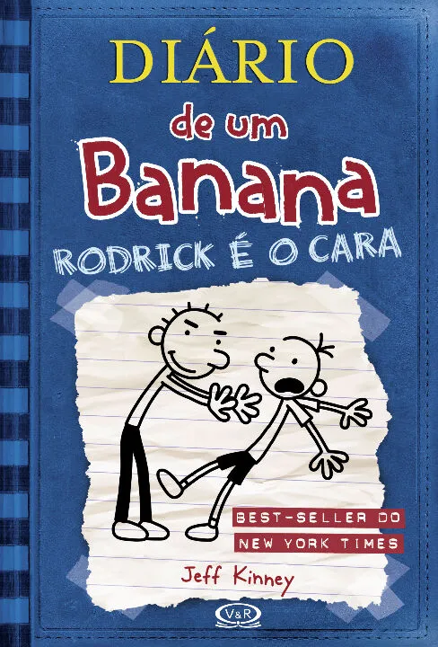

O segundo livro da série " O diário de um banana" tem como subtitulo "Rodrick é o cara", isso porque a história vai se desenvolver em torno de conflitos dentro da família, mais precisamente conflito com o irmão mais velho, o que sempre acontece , já que irmão brigam por natureza. Como Greg está crescendo Rodrick seu irmão mais velho começa a irritá-lo com várias coisas, e isso faz com que eles briguem muito, até que um dia os pais decidem viajar, e os dois sozinhos em casa dão uma festa, e a partir daí conseguem começar a se entender melhor. Porém quando os pais voltam Greg sem querer acaba falando pra mãe que deram uma festa em casa e aí todas as brigas voltam ao normal.
"Diário de um Banana 2: Rodrick é o Cara" surgiu como a sequência do sucesso de Diário de um Banana, publicado em 2007. Após o sucesso do primeiro livro, Jeff Kinney, o autor, percebeu a alta demanda por mais histórias sobre Greg Heffley e sua vida cotidiana. O segundo livro foca na relação de Greg com seu irmão mais velho, Rodrick, e as situações engraçadas e complicadas que surgem dessa convivência.
A ideia principal do livro é explorar o lado sarcástico e bagunçado desenvolvimento entre os dois irmãos, especialmente com Rodrick sendo o "bad boy" da família. O sucesso do primeiro livro levou o Kinney a dar continuidade à série, que rapidamente se tornou um sucesso entre os leitores jovens. O estilo de narração, com ilustrações engraçadas, seguiu sendo um grande agrado para o público.